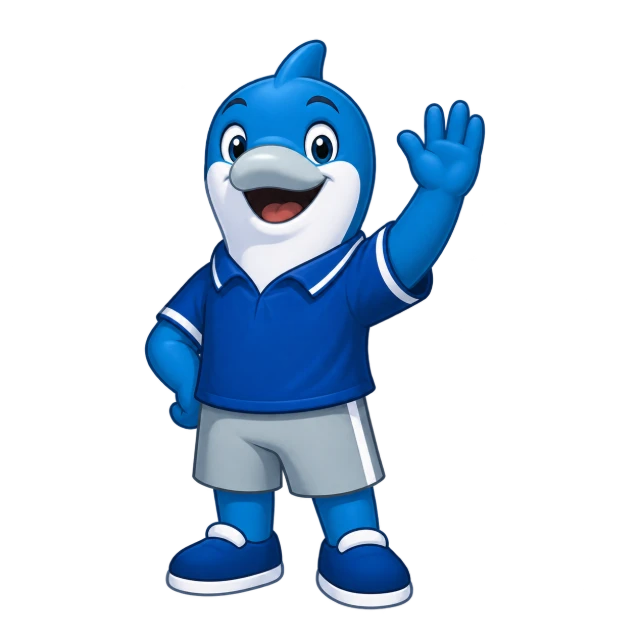

The PCU lost & found community
Lost something?
Let’s bring it home.
Find lost belongings or report an item you found at PCU.

Campus reports
Browse lost, found, and returned items.
Categories are temporarily unavailable. You can still search and browse reports.
No public reports yet
Reports appear here after approval. If you lost or found something, submit a report to get started.
Need a hand?
How do I contact a reporter?
Open a report and log in with your verified PCU account. You can see any contact details the reporter chose to share. If none are listed, check back later.
Why is my report not showing?
New reports need administrator approval. Check My reports for the current status.
How do I confirm an item belongs to me?
Compare its description, date, and location. Share a distinguishing detail with the reporter before arranging a handover.